Petiole miner/borer (Diptera: Agromyzidae) in Arnoglossum
| Record no.: | 0686 |
|---|---|
| Feeding guild: | Petiole miner/borer |
| Taxonomy: | Diptera: Agromyzidae: cf. Melanagromyza sp. |
| Stages observed: | trace, puparium |
| Distribution observed: | IA |
| Hosts in Arnoglossum: | A. reniforme (great indian-plantain) |
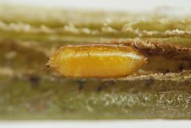
Tunnels of this agromyzid occur in basal leaf petioles of the host. In one example observed, the tunnel system wound through much of the length of the petiole and even extended into some of the major veins of the leaf. The tunnel walls showed a ragged texture.
In 2021 I found several puparia in petioles, usually one or two per petiole. In 2023 I found tunneling in the lower portion of a petiole that appeared to be agromyzid in origin, and in 2025 I found a single additional puparium in a petiole.
In the 2021 findings I observed the placement of the puparia within the petioles. In each case the puparium was formed in a tunnel that led from the petiole interior to the surface tissues, with the puparium positioned just behind a roughly circular, transparent operculum of petiole epidermis that sealed off the end of the tunnel from the outside world.
One of the 2021 puparia whose characteristics I recorded was straw-colored with brownish posterior spiracular plates without obvious horns. Interestingly, the spiracular plates were borne on short lobes that were subtly but noticeably different in color from the surrounding surface of the puparium, and the anterior spiracles were unusually large and perhaps even more prominent than the posterior spiracles, both somewhat unusual features among stem borer agromyzids I have examined in this study. Furthermore, the arrangement of the posterior spiracles and the prominence of the anterior spiracles in the 2021 puparium appeared to match the same features in the 2025 puparium. These characteristics are significantly different from those shown by the puparium of M. arnoglossi (record 0075, 0078, so I suggest the petiole tunneler is a different species.
I have not yet reared adults, but they apparently emerge in spring from overwintered puparia.
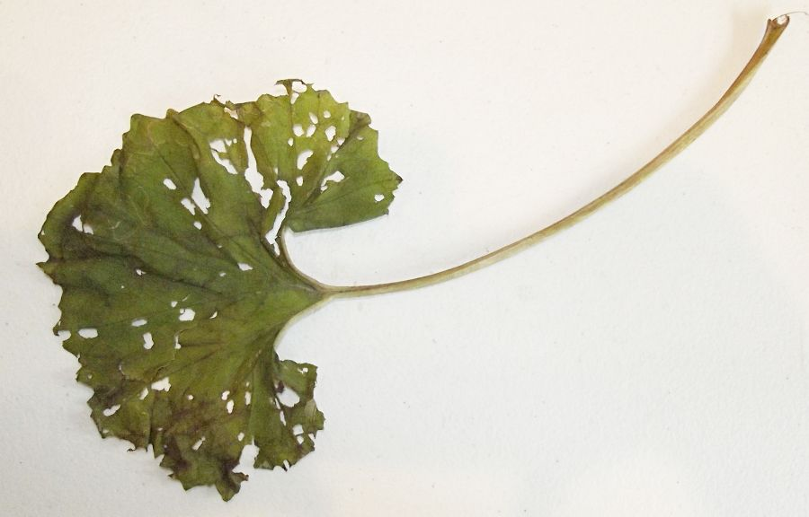
 Prev
Prev
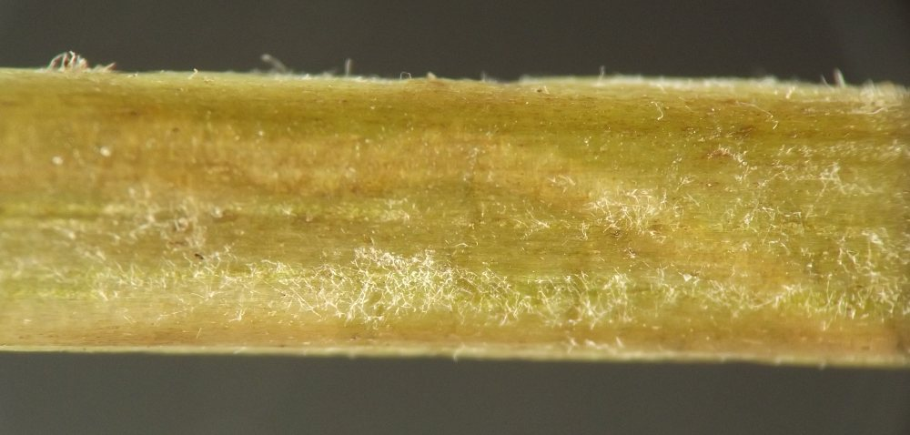


{kind=link}
{kind=link}
{kind=link}
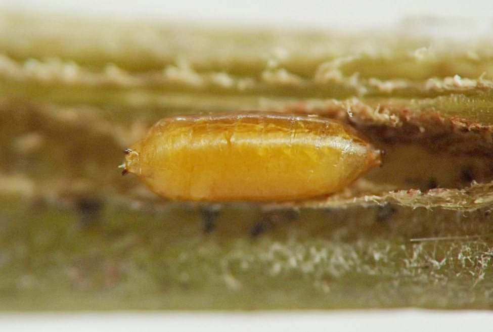
{kind=link}
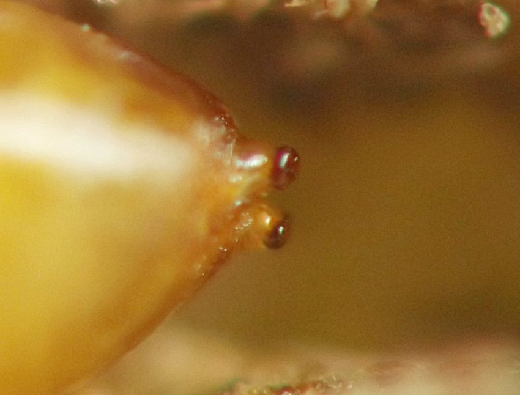
{kind=link}
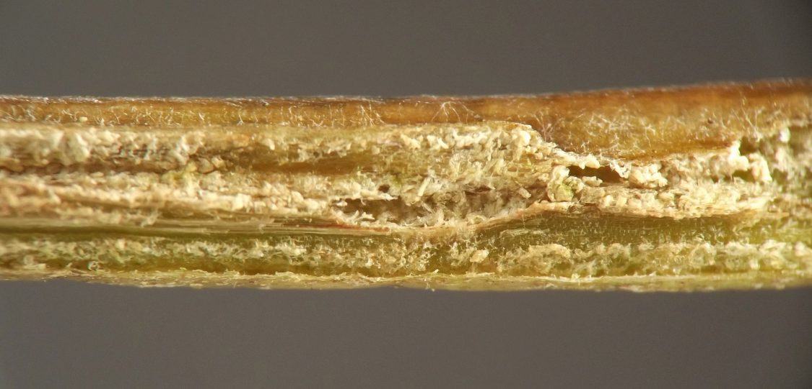
{kind=link}
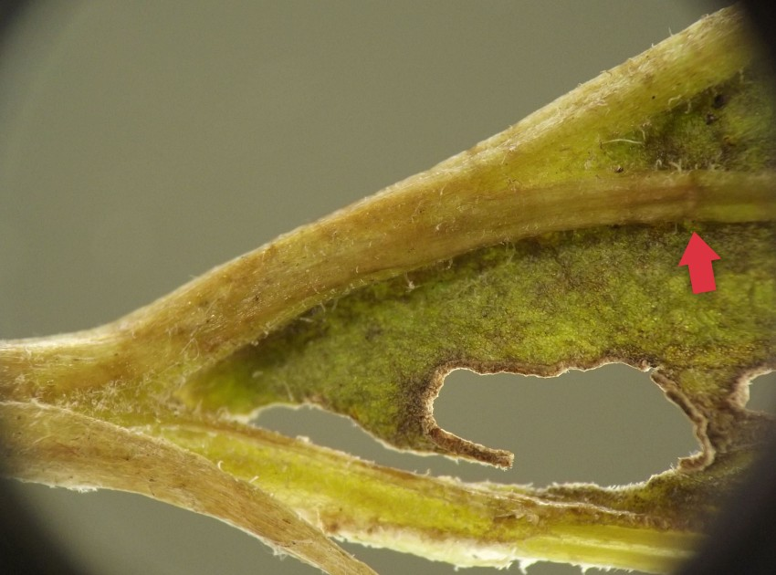
{kind=link}
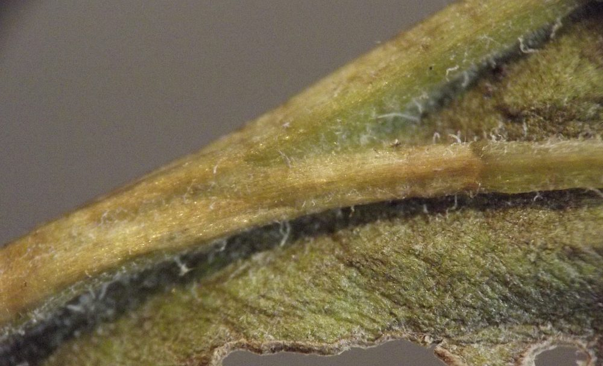
{kind=link}
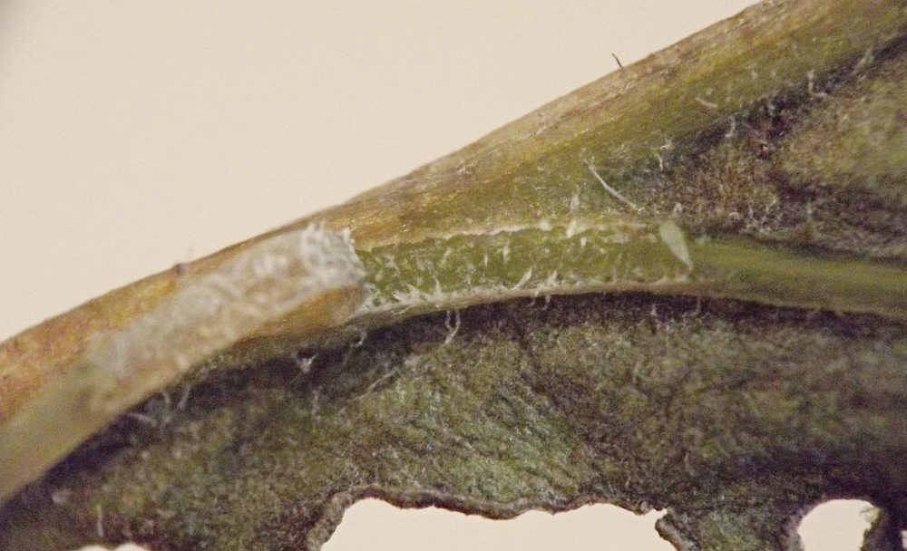
{kind=link}
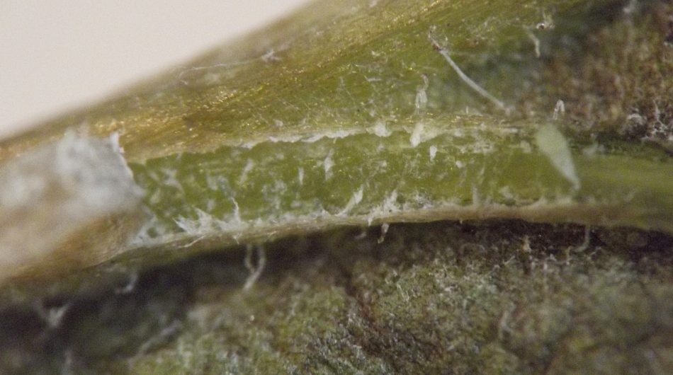
{kind=link}
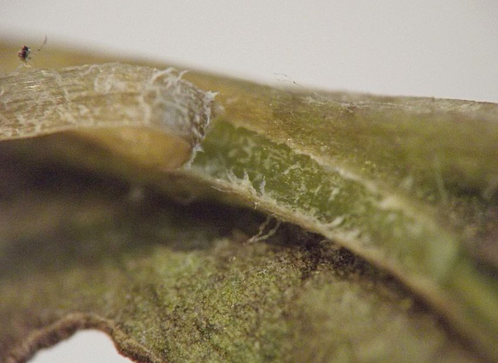
{kind=link}
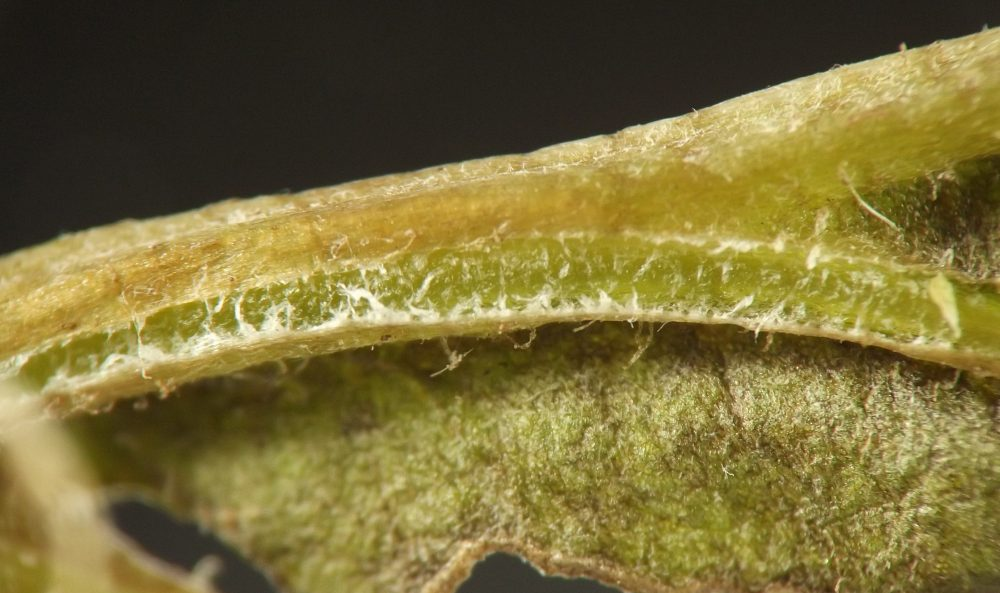
{kind=link}
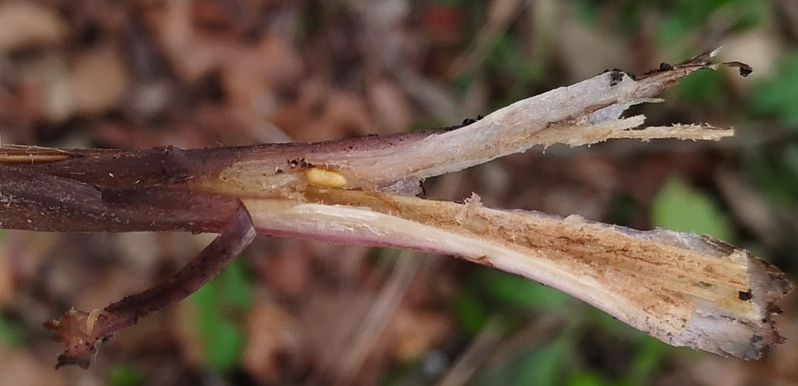
{kind=link}
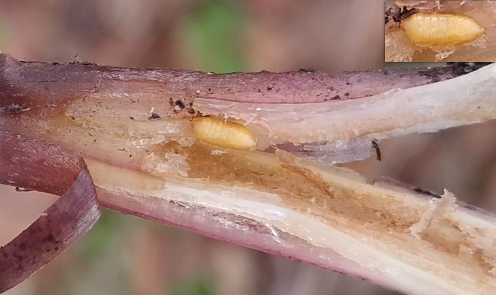
Page created: February 10, 2026. Last update: February 11, 2026